เซสชันการคำนวณ#
เอกสารนี้จะครอบคลุมวิธีการค้นหาและสร้างเซสชันการคำนวณที่ใช้คอนเทนเนอร์ รวมถึงการใช้งานแอปพลิเคชันเว็บต่าง ๆ ในหน้า 'เซสชัน'
เริ่มเซสชันใหม่#
หลังจากเข้าสู่ระบบด้วยบัญชีผู้ใช้ ให้คลิก 'เซสชัน' บนแถบด้านข้างซ้าย หน้า 'เซสชัน' ช่วยให้คุณสามารถเริ่มเซสชันใหม่ หรือใช้งานและจัดการเซสชันที่กำลังทำงานอยู่ได้
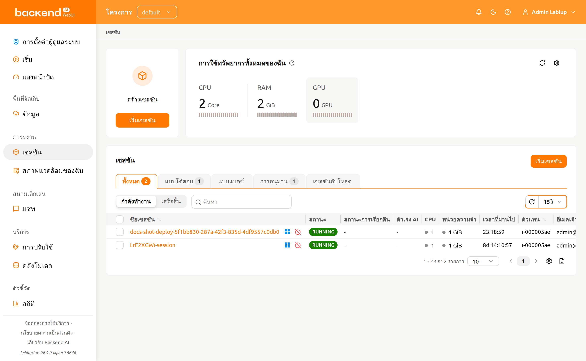
สำหรับวิธีการจัดกลุ่มและกรองรายการเซสชัน โปรดดูที่ การแสดงผลรายการเซสชัน
คลิกปุ่ม เริ่มเซสชัน เพื่อเริ่มเซสชันการคำนวณใหม่
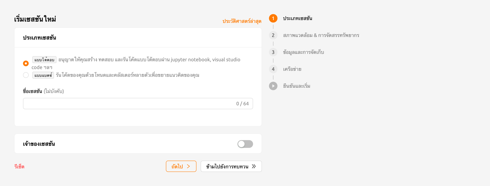
ประเภทเซสชัน#
ในหน้าแรก ผู้ใช้สามารถเลือกประเภทของเซสชันได้ ไม่ว่าจะเป็น 'interactive' หรือ 'batch' หากจำเป็น สามารถตั้งชื่อของเซสชันได้ด้วย (เป็นตัวเลือก)
ประเภทเซสชัน: กำหนดประเภทของเซสชัน มีเซสชันสองประเภทที่แตกต่างกัน ได้แก่ "Interactive" และ "Batch" ข้อแตกต่างหลักระหว่างสองประเภทมีดังต่อไปนี้:
เซสชันการคำนวณแบบโต้ตอบ (Interactive)
- เซสชันการคำนวณถูกใช้งานในลักษณะที่ผู้ใช้มีปฏิสัมพันธ์หลังจากสร้างเซสชันโดยไม่ต้องระบุสคริปต์หรือคำสั่งการดำเนินการที่กำหนดไว้ล่วงหน้า
- เซสชันจะไม่ถูกยกเลิกโดยอัตโนมัติ เว้นแต่ผู้ใช้จะทำการทำลายเซสชันอย่างชัดเจนหรือผู้ดูแลระบบตั้งค่าโปรแกรมทำความสะอาดเซสชัน
เซสชันการคำนวณแบบชุด (Batch)
- กำหนดสคริปต์ล่วงหน้าที่จะถูกดำเนินการเมื่อเซสชันการคำนวณพร้อมใช้งาน
- เซสชันนี้จะดำเนินการสคริปต์ทันทีที่เซสชันการคำนวณพร้อมใช้งาน จากนั้นจะยุติเซสชันโดยอัตโนมัติทันทีที่การดำเนินการเสร็จสิ้น ซึ่งจะใช้ทรัพยากรของฟาร์มเซิร์ฟเวอร์ได้อย่างมีประสิทธิภาพและยืดหยุ่นหากผู้ใช้สามารถเขียนสคริปต์การดำเนินการล่วงหน้าหรือกำลังสร้างไปป์ไลน์ของภาระงานได้
- ผู้ใช้สามารถตั้งเวลาเริ่มต้นของเซสชันการคำนวณแบบ batch ได้ อย่างไรก็ตาม โปรดจำไว้ว่าฟีเจอร์นี้ไม่รับประกันว่าเซสชันจะเริ่มต้นตามเวลาที่ลงทะเบียนไว้ เซสชันอาจยังคงอยู่ในสถานะ 'PENDING' เนื่องจากทรัพยากรไม่เพียงพอ เป็นต้น แต่จะรับประกันว่าเซสชันจะไม่ทำงานก่อนเวลาเริ่มต้น
- ผู้ใช้ยังสามารถตั้งค่า 'Timeout Duration' ของเซสชันการคำนวณแบบ batch ได้ เมื่อผู้ใช้ตั้งค่าระยะเวลาหมดเวลา เซสชันจะยุติโดยอัตโนมัติหากเกินเวลาที่กำหนด
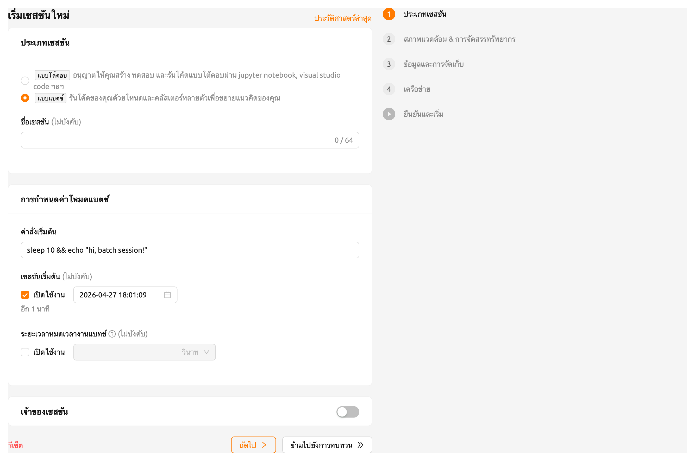
รูปที่ 10.3
- ชื่อเซสชัน: ผู้ใช้สามารถระบุชื่อของเซสชันการคำนวณที่จะสร้างได้ หากตั้งค่าไว้ ชื่อนี้จะปรากฏในข้อมูลเซสชัน ทำให้สามารถแยกแยะระหว่างเซสชันการคำนวณหลายรายการได้ หากไม่ได้ระบุ ระบบจะกำหนดคำแบบสุ่มให้โดยอัตโนมัติ ชื่อเซสชันยอมรับเฉพาะตัวอักษรและตัวเลขที่มีความยาว 4 ถึง 64 ตัวอักษรโดยไม่มีช่องว่าง
หากผู้ใช้สร้างเซสชันด้วยบัญชี superadmin
ผู้ใช้สามารถมอบหมายเจ้าของเซสชันเพิ่มเติมได้ หากคุณเปิดใช้งานสวิตช์สลับ
จะมีช่องอีเมลของผู้ใช้ปรากฏขึ้น
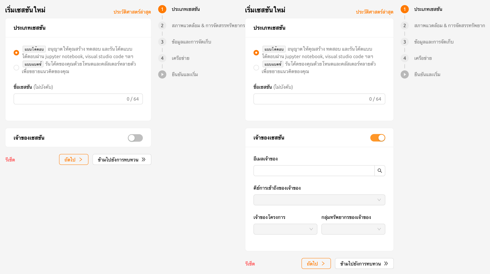
ป้อนอีเมลของผู้ใช้ที่คุณต้องการมอบหมายเซสชันให้ คลิกปุ่ม 'search' และคีย์การเข้าถึงของผู้ใช้จะถูกลงทะเบียนโดยอัตโนมัติ คุณยังสามารถเลือกโปรเจกต์และกลุ่มทรัพยากรได้อีกด้วย
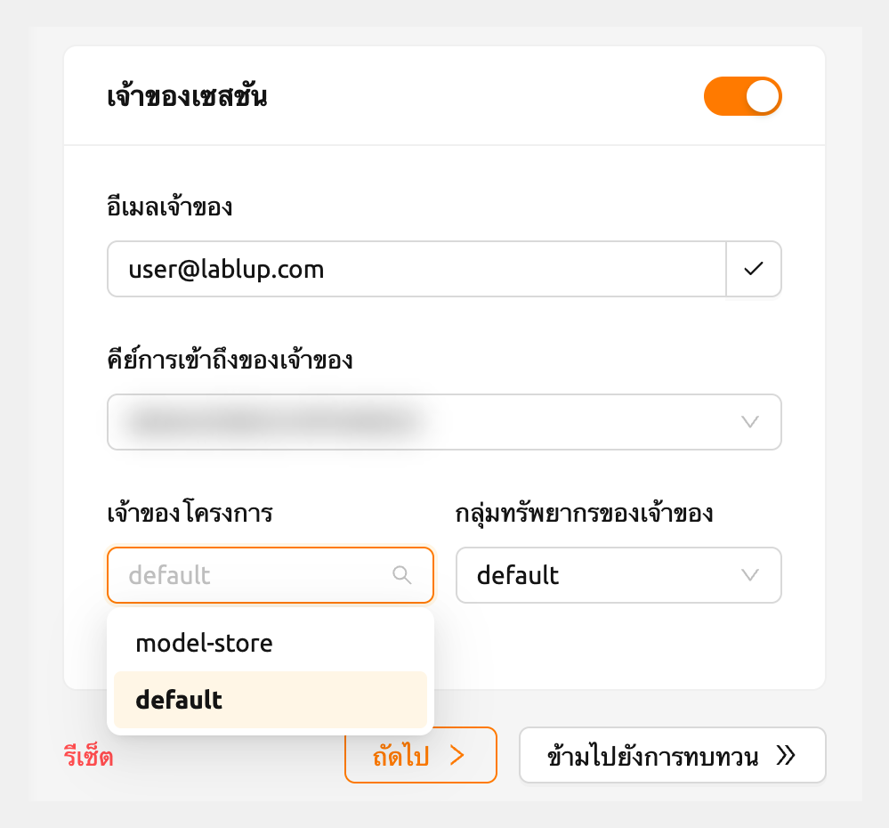
สภาพแวดล้อมและการจัดสรรทรัพยากร#
คลิกปุ่ม 'Next' ที่ด้านล่าง หรือเมนู 'Environments & Resource allocation' ทางด้านขวา เพื่อไปยังหน้าถัดไป หากคุณต้องการสร้างเซสชันโดยไม่มีการตั้งค่าเพิ่มเติม ให้กดปุ่ม 'Skip to review' ในกรณีนี้ การตั้งค่าในหน้าอื่น ๆ จะใช้ค่าเริ่มต้นทั้งหมด
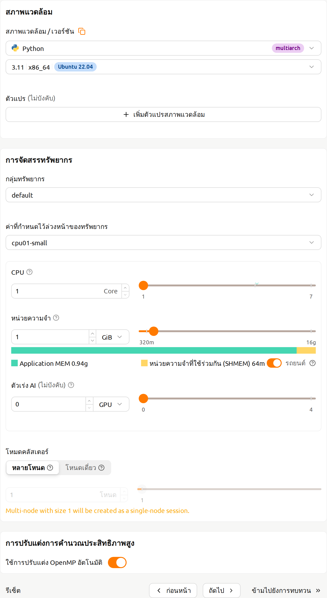
สภาพแวดล้อม#
สำหรับคำอธิบายโดยละเอียดของแต่ละรายการที่สามารถตั้งค่าได้ในหน้าที่สอง โปรดดูที่รายการต่อไปนี้:
สภาพแวดล้อม (Environments): ผู้ใช้สามารถเลือกสภาพแวดล้อมพื้นฐานสำหรับเซสชันการคำนวณ เช่น TensorFlow, PyTorch, C++ เป็นต้น เซสชันการคำนวณจะถูกรวมเข้ากับไลบรารีสภาพแวดล้อมพื้นฐานโดยอัตโนมัติ หากผู้ใช้เลือกสภาพแวดล้อมอื่น แพ็กเกจที่เกี่ยวข้องจะถูกติดตั้งตามค่าเริ่มต้น
เวอร์ชัน (Version): ผู้ใช้สามารถระบุเวอร์ชันของสภาพแวดล้อมได้ มีหลายเวอร์ชันในสภาพแวดล้อมเดียว ตัวอย่างเช่น TensorFlow มีหลายเวอร์ชัน เช่น 1.15, 2.3 เป็นต้น
ชื่ออิมเมจ (Image Name): ผู้ใช้สามารถระบุชื่อของอิมเมจที่จะใช้สำหรับเซสชันการคำนวณได้ การกำหนดค่านี้อาจไม่สามารถใช้งานได้ขึ้นอยู่กับการตั้งค่าสภาพแวดล้อม
ตั้งค่าตัวแปรสภาพแวดล้อม (Set Environment Variable): เพื่อให้พื้นที่ทำงานที่สะดวกยิ่งขึ้นสำหรับผู้ใช้ Backend.AI รองรับการตั้งค่าตัวแปรสภาพแวดล้อม ในการเริ่มต้นเซสชัน ในฟีเจอร์นี้ ผู้ใช้สามารถเพิ่มตัวแปรสภาพแวดล้อมใด ๆ เช่น
PATHโดยการกรอก ชื่อตัวแปรและค่าในกล่องโต้ตอบการกำหนดค่าสภาพแวดล้อม
รูปที่ 10.7
การจัดสรรทรัพยากร#
กลุ่มทรัพยากร (Resource Group): ระบุกลุ่มทรัพยากรที่จะสร้างเซสชันการคำนวณ กลุ่มทรัพยากรเป็นหน่วยที่จัดกลุ่มเซิร์ฟเวอร์โฮสต์ที่ผู้ใช้แต่ละคนสามารถเข้าถึงได้ โดยทั่วไป เซิร์ฟเวอร์ในกลุ่มทรัพยากรจะมีทรัพยากร GPU ประเภทเดียวกัน ผู้ดูแลระบบสามารถจำแนกเซิร์ฟเวอร์ตามเกณฑ์ใด ๆ จัดกลุ่มเป็นกลุ่มทรัพยากรหนึ่งหรือหลายกลุ่ม และกำหนดค่าว่าผู้ใช้สามารถใช้กลุ่มทรัพยากรใดได้บ้าง ผู้ใช้สามารถเริ่มเซสชันการคำนวณได้เฉพาะบนเซิร์ฟเวอร์ในกลุ่มทรัพยากร ที่ผู้ดูแลระบบอนุญาตเท่านั้น หากได้รับอนุญาตหลายกลุ่มทรัพยากร ผู้ใช้สามารถเลือกกลุ่มใดก็ได้ที่ต้องการ อย่างไรก็ตาม ไม่สามารถเปลี่ยนแปลงได้เมื่อระบบอนุญาตให้ตั้งค่าเพียงกลุ่มเดียว
Resource Presets: เทมเพลตเหล่านี้มีชุดทรัพยากรที่กำหนดไว้ล่วงหน้า เช่น CPU หน่วยความจำ และ GPU ที่จะจัดสรรให้กับเซสชันการคำนวณ ผู้ดูแลระบบสามารถ กำหนดการตั้งค่าทรัพยากรที่ใช้บ่อยไว้ล่วงหน้าได้ โดยการปรับค่าตัวเลข หรือเลื่อนแถบเลื่อน ผู้ใช้สามารถจัดสรรทรัพยากรตามจำนวนที่ต้องการได้
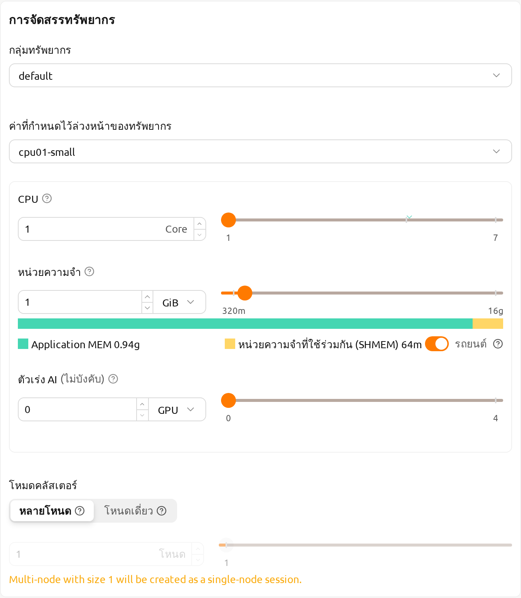
รูปที่ 10.8 ความหมายของแต่ละรายการมีดังนี้ การคลิกปุ่ม 'Help (?)' จะให้ข้อมูลเพิ่มเติมด้วย
- CPU: CPU ทำการคำนวณเลขคณิต ตรรกะ การควบคุม และการดำเนินการอินพุต/เอาต์พุต (I/O) ขั้นพื้นฐานตามคำสั่งที่ระบุ โดยทั่วไปแล้ว CPU ที่มากขึ้นจะเป็นประโยชน์สำหรับภาระงานการคำนวณสมรรถนะสูง แต่เพื่อให้ได้ประโยชน์จาก CPU ที่มากขึ้น โค้ดโปรแกรมต้องเขียนให้สามารถรองรับ CPU หลายตัวได้
- หน่วยความจำ (Memory): หน่วยความจำคอมพิวเตอร์เป็นพื้นที่จัดเก็บข้อมูลชั่วคราว โดยเก็บข้อมูล และคำสั่งที่ Central Processing Unit (CPU) ต้องการ เมื่อใช้ GPU ในภาระงาน การเรียนรู้ของเครื่อง จำเป็นต้องจัดสรรหน่วยความจำอย่างน้อยสองเท่าของ หน่วยความจำ GPU มิฉะนั้น เวลาว่างของ GPU จะเพิ่มขึ้น ส่งผลให้ประสิทธิภาพลดลง
- หน่วยความจำที่แชร์: ปริมาณหน่วยความจำที่แชร์ในหน่วย GB ที่จะจัดสรรสำหรับเซสชันการคำนวณ หน่วยความจำที่แชร์จะใช้บางส่วนของหน่วยความจำที่ตั้งค่าใน RAM ดังนั้นจึงไม่สามารถมากกว่าปริมาณที่ระบุใน RAM ได้
- AI Accelerator: AI accelerator (GPU หรือ NPU) เหมาะสำหรับการคำนวณเมทริกซ์/เวกเตอร์ที่เกี่ยวข้องกับการเรียนรู้ของเครื่อง AI accelerator เร่งความเร็วอัลกอริธึมการฝึกอบรม / การอนุมานโดยมาก ทำให้เวลาในการประมวลผลลดลงจากหลายสัปดาห์เหลือไม่กี่วัน

รูปที่ 10.9
AI Accelerator บางตัวใช้ หน่วยความจำแบบรวม (unified memory) โดยไม่มีหน่วยความจำ เฉพาะของตัวเอง แต่ใช้พูลหน่วยความจำของโฮสต์ร่วมกัน เมื่อคุณเลือก AI Accelerator ประเภทนี้ จะไม่สามารถตั้งค่าหน่วยความจำของ AI Accelerator แยกต่างหากได้ โดยจะใช้ หน่วยความจำจากพูลหน่วยความจำของโฮสต์โดยอัตโนมัติ
ตัวเลือก จำนวนเซสชัน ไม่ได้ถูกตั้งค่าในฟอร์มนี้อีกต่อไป หากต้องการเริ่ม หลายเซสชันด้วยการตั้งค่าเดียวกันในคราวเดียว ให้ใช้เมนูดรอปดาวน์ของปุ่มเริ่ม ในขั้นตอน ยืนยันและเปิดใช้งาน ดูรายละเอียดได้ที่ส่วน ยืนยันและเปิดใช้งาน
เลือกเอเจนต์ (Select Agent): เลือกเอเจนต์ที่จะมอบหมายให้ โดยค่าเริ่มต้น เอเจนต์จะถูกเลือกโดยอัตโนมัติ โดยตัวจัดตาราง ตัวเลือกเอเจนต์จะแสดงปริมาณทรัพยากรที่ใช้งานได้จริงสำหรับแต่ละเอเจนต์ ปัจจุบัน ฟีเจอร์นี้รองรับเฉพาะในสภาพแวดล้อมโหนดเดียว คอนเทนเนอร์เดียวเท่านั้น
โหมดคลัสเตอร์ (Cluster Mode): เลือกวิธีจัดวางเซสชันการคำนวณหนึ่งเซสชันบนเอเจนต์ การเลือก โหนดเดี่ยว (Single Node) จะวางโหนดหลักและโหนดเวิร์กเกอร์ทั้งหมดไว้บนเอเจนต์เดียว (โหนดกายภาพหรือเครื่องเสมือน) ในขณะที่ หลายโหนด (Multi Node) จะแยกโหนดหลักหนึ่งโหนดและโหนดเวิร์กเกอร์หนึ่งโหนดขึ้นไปไว้บนเอเจนต์หลายตัว วางเมาส์เหนือไอคอน (
?) ข้างแต่ละตัวเลือกเพื่อดูคำอธิบายสั้น ๆ หลังจากเลือกโหมดแล้ว ให้กำหนดขนาดคลัสเตอร์ (Cluster Size) ด้วยแถบเลื่อนหรือช่องป้อนตัวเลข ในโหมดโหนดเดี่ยว ขนาดจะนับจำนวน คอนเทนเนอร์ บนเอเจนต์เดียว และในโหมดหลายโหนดจะนับจำนวน โหนดที่กระจายอยู่บนเอเจนต์หลายตัว เครื่องหมาย ทรัพยากรที่เหลือ บนแถบเลื่อนจะแสดงขนาดสูงสุดที่สามารถเริ่มต้นได้ทันทีด้วยทรัพยากรที่จัดสรรไว้ในปัจจุบัน คุณสามารถเลือกขนาดที่ใหญ่กว่าได้ แต่เซสชันอาจอยู่ในสถานะรอดำเนินการจนกว่าจะมีทรัพยากรเพียงพอ เซสชันหลายโหนดที่มีขนาดเท่ากับ 1 จะถูกสร้างเป็นเซสชันโหนดเดี่ยว สำหรับข้อมูลเพิ่มเติม โปรดดูที่ ภาพรวมของเซสชันการคำนวณแบบคลัสเตอร์ของ Backend.AI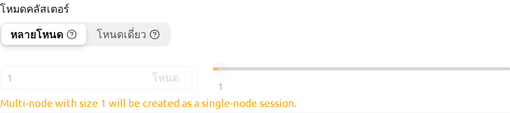
รูปที่ 10.10
ฟีเจอร์ Agent Select อาจไม่สามารถใช้งานได้ขึ้นอยู่กับสภาพแวดล้อมของเซิร์ฟเวอร์
การปรับแต่งการคำนวณสมรรถนะสูง (High-Performance Computing Optimizations): Backend.AI ให้การกำหนดค่า ที่เกี่ยวข้องกับการปรับแต่ง HPC
Backend.AI มี UI การกำหนดค่าสำหรับตัวแปรควบคุมภายในใน
nthreads-varBackend.AI ตั้งค่านี้ให้เท่ากับจำนวนแกน CPU ของเซสชันโดยค่าเริ่มต้น ซึ่งมีผลในการเร่งความเร็วภาระงานการคำนวณสมรรถนะสูงทั่วไป อย่างไรก็ตาม สำหรับภาระงานแบบหลายเธรดบางประเภท มีการใช้กระบวนการหลายกระบวนการที่ใช้ OpenMP พร้อมกัน ส่งผลให้มีจำนวนเธรดที่มากผิดปกติและประสิทธิภาพลดลงอย่างมาก เพื่อแก้ไขปัญหานี้ การตั้งค่าจำนวนเธรดเป็น 1 หรือ 2 จะช่วยแก้ไขได้
ข้อมูลและการจัดเก็บ#
คลิกปุ่ม 'Next' ที่ด้านล่าง หรือเมนู 'ข้อมูลและการจัดเก็บ' ทางด้านขวาเพื่อไปยังหน้าถัดไป
เมื่อเซสชันการคำนวณถูกทำลาย การลบข้อมูลจะถูกตั้งค่าเป็นค่าเริ่มต้น อย่างไรก็ตาม ข้อมูลที่จัดเก็บในโฟลเดอร์ที่ถูกเมานต์จะยังคงอยู่ ข้อมูลในโฟลเดอร์เหล่านั้นยังสามารถนำกลับมาใช้ใหม่ได้โดยการเมานต์เมื่อสร้างเซสชันการคำนวณใหม่
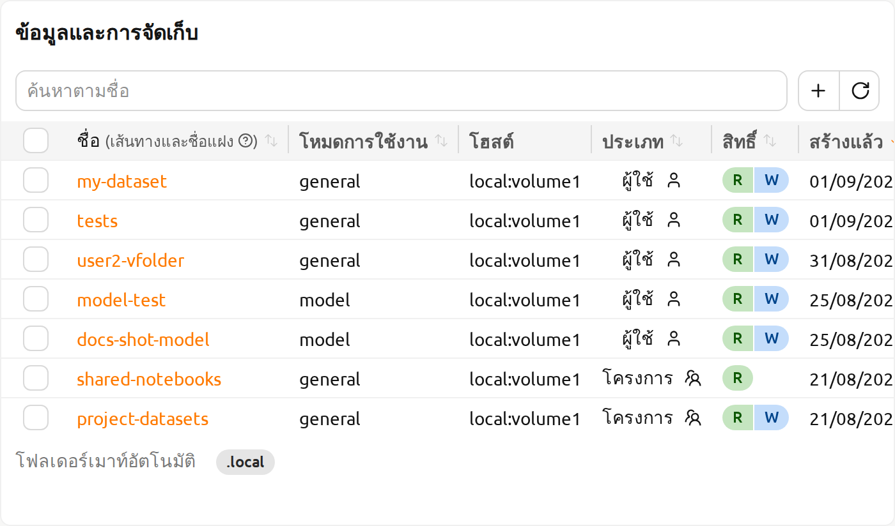
ผู้ใช้สามารถระบุโฟลเดอร์ข้อมูลที่จะเมานต์ในเซสชันการคำนวณได้ สามารถใช้ตัวสำรวจโฟลเดอร์ได้โดยการคลิกที่ชื่อโฟลเดอร์ สำหรับข้อมูลเพิ่มเติม โปรดดูที่ส่วน สำรวจโฟลเดอร์
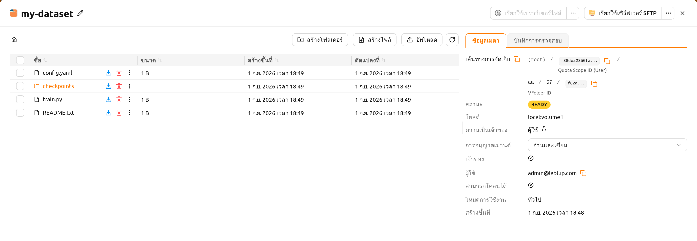
สามารถสร้างโฟลเดอร์ใหม่ได้โดยการคลิกปุ่ม '+' ถัดจากช่องค้นหา เมื่อสร้างโฟลเดอร์ใหม่ โฟลเดอร์นั้นจะถูกเลือกเป็นโฟลเดอร์ที่จะเมานต์โดยอัตโนมัติ สำหรับข้อมูลเพิ่มเติม โปรดดูที่ส่วน สร้างโฟลเดอร์จัดเก็บ
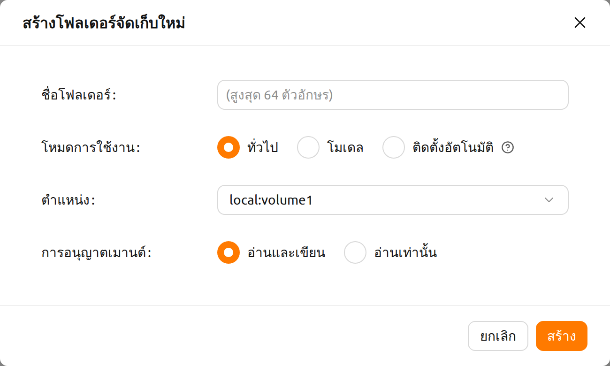
เครือข่าย#
คลิกปุ่ม 'Next' ที่ด้านล่าง หรือเมนู 'Network' ทางด้านขวาเพื่อไปยังหน้าถัดไป ในหน้านี้ สามารถทำการกำหนดค่าเครือข่าย เช่น Preopen Ports ได้
- ตั้งค่าพอร์ตที่เปิดล่วงหน้า (Set Preopen Ports): จัดเตรียมอินเทอร์เฟซสำหรับผู้ใช้ในการตั้งค่าพอร์ตที่เปิดล่วงหน้า ในเซสชันการคำนวณ ดูที่ วิธีเพิ่มพอร์ตที่เปิดล่วงหน้าก่อนสร้างเซสชัน สำหรับข้อมูลเพิ่มเติม
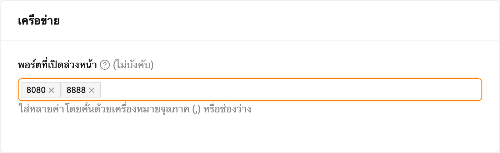
ยืนยันและเปิดใช้งาน#
เมื่อคุณตั้งค่าเครือข่ายเสร็จแล้ว ให้คลิกปุ่ม 'Next' ที่ด้านล่าง หรือ ปุ่ม 'Confirm and Launch' ทางด้านขวาเพื่อไปยังหน้าสุดท้าย
ในหน้าสุดท้าย ผู้ใช้สามารถดูข้อมูลของเซสชันที่จะสร้างได้
เช่น สภาพแวดล้อม ทรัพยากรที่จัดสรร ข้อมูลการเมานต์
ตัวแปรสภาพแวดล้อมที่ตั้งค่าไว้ในหน้าก่อนหน้า พอร์ตที่เปิดล่วงหน้า เป็นต้น
เมื่อตรวจสอบการตั้งค่าแล้ว ผู้ใช้สามารถเริ่มเซสชันได้โดยคลิกปุ่ม Launch
คลิกปุ่ม Edit ที่อยู่มุมขวาบนของแต่ละการ์ดเพื่อไปยังหน้าที่เกี่ยวข้อง
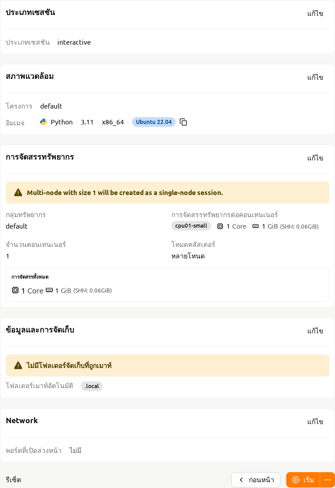
หากต้องการเริ่มหลายเซสชันพร้อมกันด้วยการตั้งค่าเดียวกัน ให้คลิกไอคอนเพิ่มเติม (...)
ถัดจากปุ่ม 'Launch' เพื่อเปิดเมนูดรอปดาวน์ แล้วเลือก เริ่มหลายเซสชัน
กล่องโต้ตอบจะปรากฏขึ้นเพื่อให้คุณกำหนด จำนวนเซสชัน ที่จะสร้าง โดยแต่ละเซสชัน
ถูกสร้างขึ้นอย่างอิสระด้วยทรัพยากรที่แสดงในฟอร์ม การคลิกปุ่ม 'Launch' เพียงครั้งเดียว
จะเริ่มเซสชันเพียงหนึ่งเซสชันตามค่าเริ่มต้น
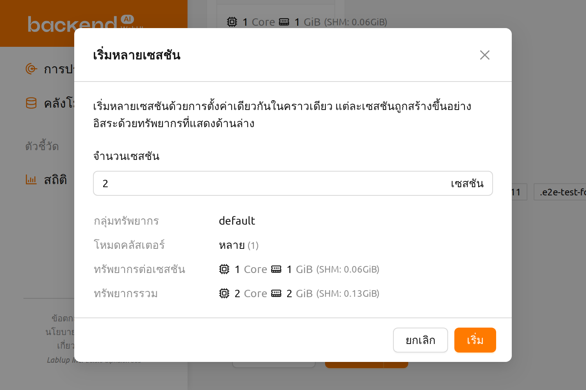
การเปิดเซสชันพร้อมกันถูกจำกัดโดยระบบ หากจำนวนรวมที่ขอเกินโควตาเซสชันที่เหลืออยู่ จะมีคำเตือนปรากฏขึ้นและบางเซสชันอาจถูกจัดคิวจนกว่าจะมีทรัพยากรพร้อมใช้งาน
หากมีปัญหากับการตั้งค่า จะมีข้อความแสดงข้อผิดพลาดปรากฏขึ้นดังต่อไปนี้ ผู้ใช้สามารถแก้ไขการตั้งค่าของตนได้เมื่อสิ่งนี้เกิดขึ้น
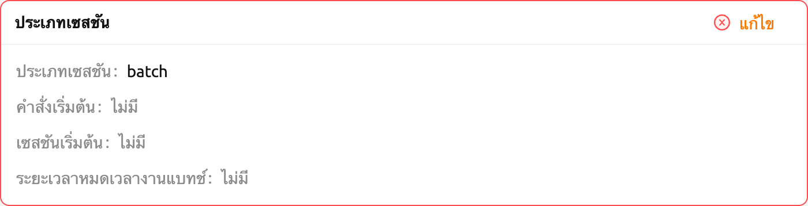
เมื่อคุณคลิกปุ่ม 'Launch' จะมีกล่องโต้ตอบคำเตือนปรากฏขึ้นระบุว่าไม่มีโฟลเดอร์ที่ถูกเมานต์ หากไม่จำเป็นต้องเมานต์โฟลเดอร์ คุณสามารถเพิกเฉยต่อคำเตือนและคลิกปุ่ม 'Start' ในกล่องโต้ตอบเพื่อดำเนินการต่อได้
เมื่อมีการเพิ่มเซสชันการคำนวณใหม่ในแท็บ Running จะมีการแจ้งเตือนปรากฏที่มุมล่างขวาของหน้าจอ พื้นที่ด้านล่างซ้ายของการแจ้งเตือนจะแสดงสถานะเซสชัน ในขณะที่พื้นที่ด้านล่างขวาจะมีปุ่มสำหรับเปิดกล่องโต้ตอบแอป เริ่มเทอร์มินัล ดูบันทึกของคอนเทนเนอร์ และยุติเซสชัน คุณยังสามารถดูการแจ้งเตือนการสร้างเซสชันนี้ได้โดยคลิก Notifications ในส่วนหัว
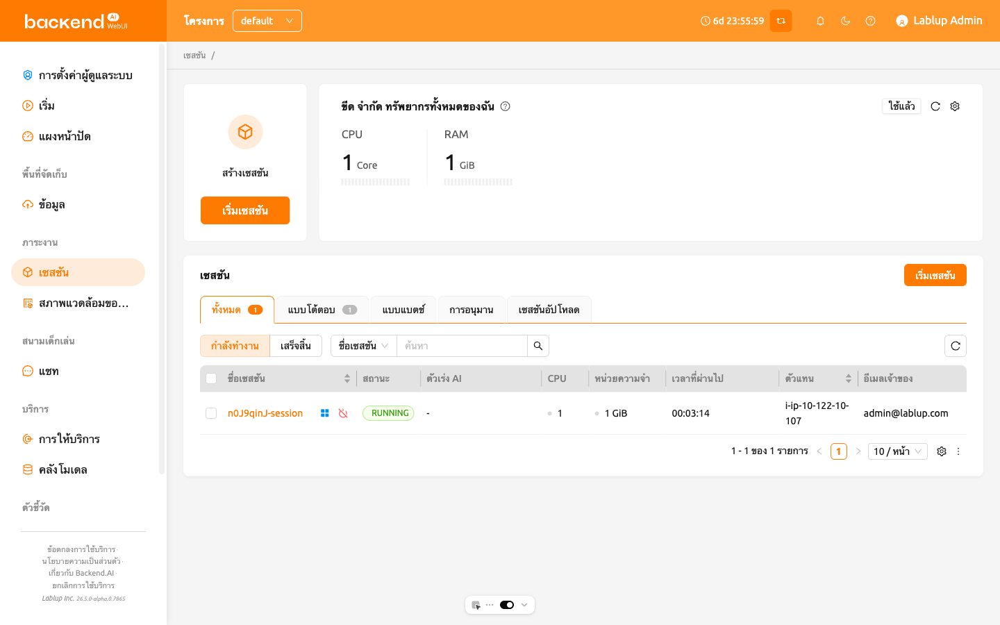
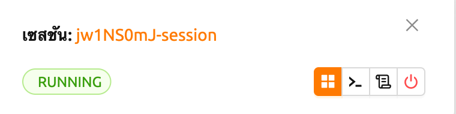
โดยการคลิกปุ่มกล่องโต้ตอบแอปที่อยู่ซ้ายสุด คุณสามารถดูบริการแอปที่พร้อมใช้งานได้
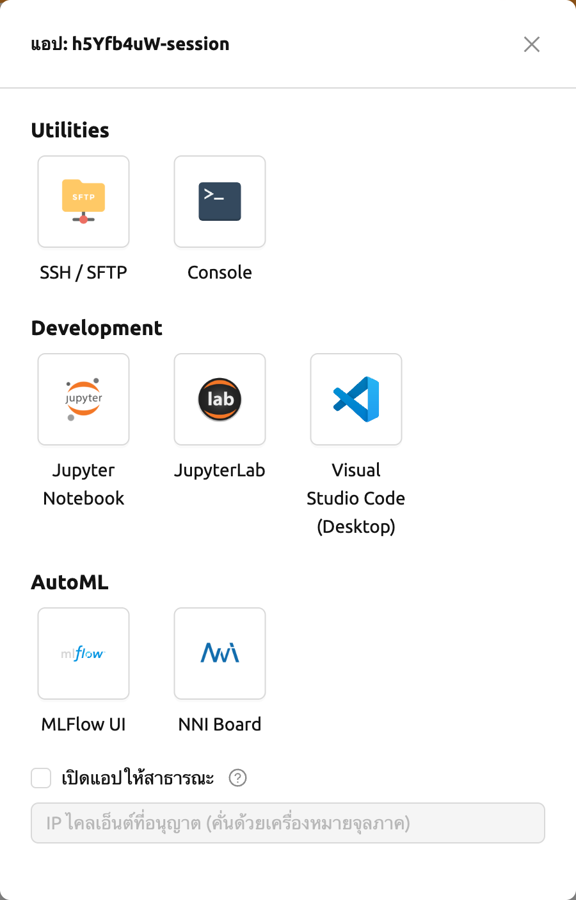
ประวัติล่าสุด#
หน้า 'Session Launcher' มีชุดตัวเลือกสำหรับการสร้างเซสชัน
ฟีเจอร์ Recent History จะจดจำข้อมูลเกี่ยวกับเซสชันที่สร้างไว้ก่อนหน้า
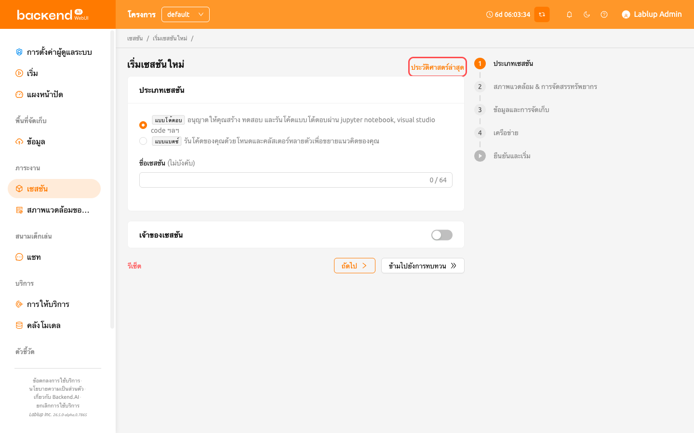
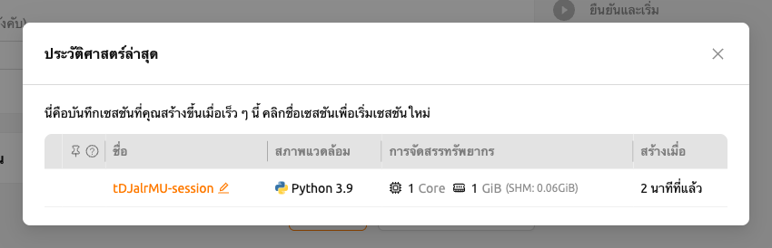
โมดัล Recent History จะจัดเก็บข้อมูลเกี่ยวกับเซสชันห้ารายการที่สร้างล่าสุด
การคลิกชื่อเซสชันจะนำคุณไปยังหน้า 'Confirm and Launch' ซึ่งเป็นขั้นตอนสุดท้ายของการสร้างเซสชัน
แต่ละรายการสามารถเปลี่ยนชื่อหรือปักหมุดเพื่อการเข้าถึงที่ง่ายขึ้นได้
ผู้ดูแลระบบสูงสุด (Superadmin) สามารถค้นหาข้อมูลเซสชันการคำนวณทั้งหมดที่กำลังทำงาน (หรือ ยุติแล้ว) ในคลัสเตอร์ได้ และผู้ใช้สามารถดูได้เฉพาะเซสชันที่ตนเอง สร้างขึ้นเท่านั้น
รายการเซสชันการคำนวณอาจแสดงผลไม่เป็นปกติเนื่องจากปัญหาการเชื่อมต่อเครือข่าย เป็นระยะ ๆ เป็นต้น สามารถแก้ไขได้โดยการรีเฟรช เบราว์เซอร์
การแสดงผลรายการเซสชัน#
รายการเซสชันแบ่งเป็นแท็บตามประเภทของเซสชัน ได้แก่ ทั้งหมด, แบบโต้ตอบ, แบบแบตช์, การอนุมาน และ เซสชันอัปโหลด โดยแต่ละแท็บจะมีปุ่มสลับระหว่าง กำลังทำงาน / เสร็จสิ้น และตัวกรองคุณสมบัติสำหรับ ชื่อเซสชัน, กลุ่มทรัพยากร และ ตัวแทน
มุมมองกริดทรัพยากร#
เมื่อเปิดใช้งานคุณสมบัติการทดลอง Session resource grid view ในการตั้งค่าผู้ใช้ ปุ่มสลับ View mode จะปรากฏเหนือรายการถัดจากปุ่มรีเฟรช และใช้สลับรายการระหว่าง Table กับ Grid ได้ ดูวิธีเปิดใช้งานคุณสมบัตินี้ได้ที่หัวข้อ คุณสมบัติการทดลอง มุมมองกริดใช้แท็บประเภทเซสชัน ปุ่มสลับ กำลังทำงาน / เสร็จสิ้น และตัวกรองคุณสมบัติชุดเดียวกับตาราง คุณจึงสามารถกรองรายการก่อนแล้วค่อยสลับมุมมองได้
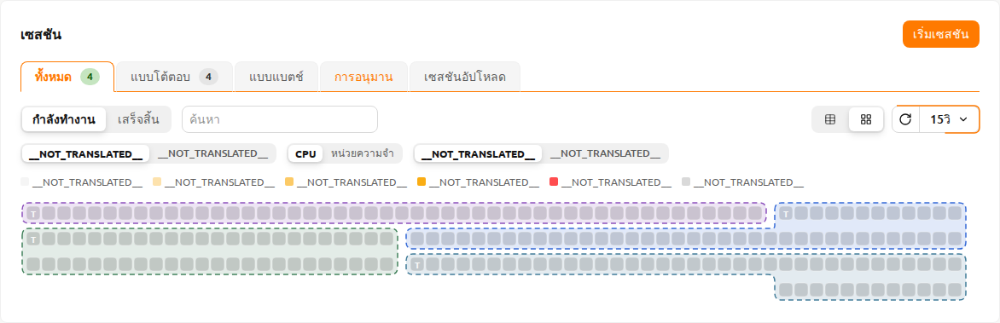
ในมุมมองกริด แต่ละเซสชันจะแสดงเป็นแผ่นที่ประกอบด้วยเซลล์ขนาดเล็ก โดยสีของเซลล์แสดงอัตราการใช้ทรัพยากรแบบเรียลไทม์ของเซสชันนั้น หากต่ำกว่า 50% จะใช้สีปกติ ระหว่าง 50% ถึง 80% จะใช้สีเตือนที่เข้มขึ้นตามลำดับ และตั้งแต่ 80% ขึ้นไปจะใช้สีแดง เซสชันที่ยังไม่มีข้อมูลแบบเรียลไทม์ เช่น เซสชันที่ยังไม่เริ่มทำงาน จะคงสี No data ไว้ ส่วนเซสชันที่ทรัพยากรยังอยู่ในสถานะร้องขอ จะแสดงด้วยเส้นขอบแบบประ ความหมายของแต่ละสีดูได้จากคำอธิบายสัญลักษณ์เหนือกริด
เมื่อวางเมาส์บนแผ่นของเซสชัน จะเห็นข้อมูลสรุปของเซสชันนั้น ได้แก่ สถานะ ประเภท โหมดคลัสเตอร์ กลุ่มทรัพยากร อิมเมจ เวลาเริ่มต้นและเวลาที่ผ่านไป อัตราการใช้ทรัพยากรที่จัดสรรแต่ละรายการ และดิสก์ I/O เมื่อคลิกที่แผ่นดังกล่าว แผงรายละเอียดเซสชันจะเปิดขึ้น
ตัวควบคุมเหนือกริดใช้กำหนดว่าหนึ่งเซลล์แทนอะไร
- Grid mode: เลือก Resource เพื่อแสดงหนึ่งเซลล์ต่อหนึ่งหน่วยของทรัพยากรที่เลือก หรือเลือก Kernel เพื่อแสดงหนึ่งเซลล์ต่อหนึ่งเคอร์เนลของเซสชัน
- Resource (เฉพาะโหมด Resource): เลือกทรัพยากรที่ต้องการแสดงผล ได้แก่ CPU,
หน่วยความจำ หรือตัวเร่งความเร็วที่เซสชันในรายการใช้งานอยู่
หนึ่งเซลล์เท่ากับ CPU หนึ่งคอร์ หน่วยความจำหนึ่งหน่วย หรือตัวเร่งความเร็วหนึ่งตัว
และหากใช้ตัวเร่งความเร็วแบบเศษส่วนจะแสดงเป็นเซลล์ที่เติมสีเพียงบางส่วน
ตัวเร่งความเร็วที่รายงานหน่วยความจำของอุปกรณ์จะมีสองรายการ คือ
อัตราการใช้งาน (
util) และหน่วยความจำของอุปกรณ์ (mem) - Memory unit (เฉพาะโหมด Resource เมื่อเลือกทรัพยากรประเภทหน่วยความจำ): กำหนดว่าหนึ่งเซลล์แทนหน่วยความจำเท่าใด โดยเลือกได้ 1, 2, 4 หรือ 8 GiB
- Metric (เฉพาะโหมด Kernel): เลือกสถิติแบบเรียลไทม์ที่ใช้กำหนดสีของเซลล์เคอร์เนล หากไม่มีเซสชันในรายการที่รายงานเมตริกสด ตัวเลือกนี้จะถูกปิดใช้งานและแสดงข้อความ ไม่มีเมตริกสด
- Layout: Serpentine จะเรียงแถวสลับทิศทางกัน เพื่อให้เซลล์ของเซสชันที่ขึ้นบรรทัดใหม่ยังต่อเนื่องกัน ส่วน Word-wrap จะเริ่มทุกแถวจากขอบด้านซ้าย
เหนือกริดจะมีข้อความแจ้งเกี่ยวกับเซสชันที่ไม่ได้แสดงด้วย
- เมื่อตัวกรองปัจจุบันตรงกับเซสชันมากกว่าจำนวนที่กริดแสดงได้ ระบบจะแสดงเพียง 100 เซสชันแรก พร้อมข้อความแจ้งจำนวนทั้งหมด
- ในโหมด Resource เซสชันที่ไม่ได้รับการจัดสรรทรัพยากรที่เลือกจะไม่ถูกแสดง พร้อมข้อความแจ้งจำนวนเซสชันที่ถูกซ่อน
แผงรายละเอียดเซสชัน#
สำหรับข้อมูลโดยละเอียดเกี่ยวกับเซสชัน ให้คลิกชื่อเซสชันในรายการเซสชัน แผงรายละเอียดเซสชันจะแสดงข้อมูลของเซสชัน เช่น ID เซสชัน ID ผู้ใช้ สถานะ ประเภท สภาพแวดล้อม ข้อมูลการเมานต์ การจัดสรรทรัพยากร เวลาที่จอง เวลาที่ผ่านไป เอเจนต์ โหมดคลัสเตอร์ การใช้ทรัพยากรรวมถึงเครือข่าย I/O และข้อมูลเคอร์เนล
คลิกปุ่ม 'Log' ถัดจาก 'Hostname' ใน 'Kernels' เพื่อดูบันทึกของเคอร์เนลนั้นโดยตรง
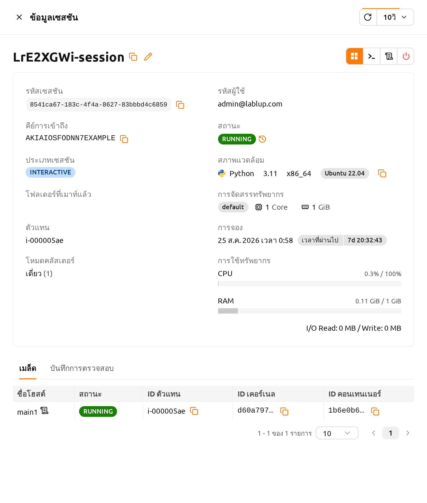
Backend.AI ให้ข้อมูลเพิ่มเติมสำหรับเซสชันในสถานะ PENDING, TERMINATED หรือ CANCELLED
คลิกปุ่ม 'Info' เพื่อตรวจสอบรายละเอียดเมื่อพร้อมใช้งาน
ปุ่มไอคอนนาฬิกาจะปรากฏข้างแท็กสถานะเซสชันในแผงรายละเอียดเซสชัน การคลิกไอคอนนี้จะเปิดโมดัลประวัติการจัดตารางเซสชัน ซึ่งแสดงบันทึกรายละเอียดของการตัดสินใจในการจัดตารางทั้งหมดที่ระบบได้ทำสำหรับเซสชันนั้น สำหรับข้อมูลเพิ่มเติม โปรดดูที่ส่วนประวัติการจัดตารางเซสชัน
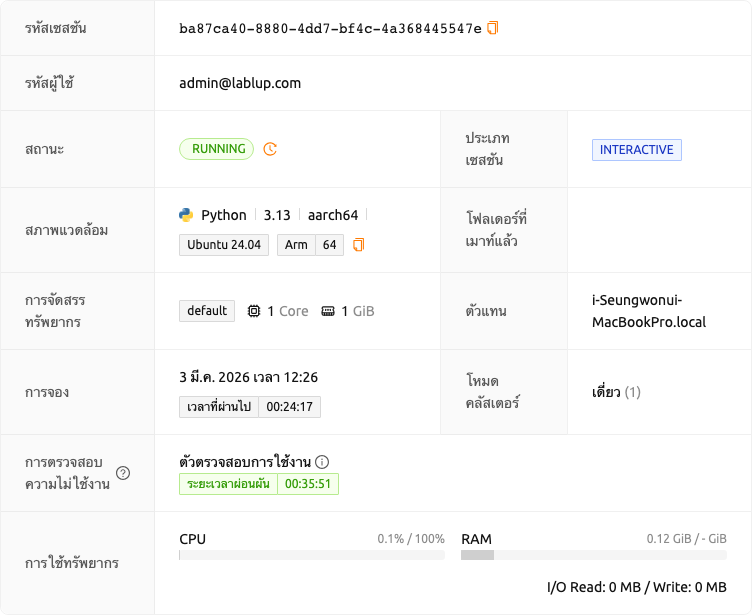
ประวัติการจัดตารางเซสชัน#
โมดัลประวัติการจัดตารางเซสชันช่วยให้มองเห็นวงจรชีวิตการจัดตารางภายในของเซสชันการคำนวณได้อย่างโปร่งใส โดยแสดงบันทึกรายละเอียดของทุกระยะการจัดตารางที่เซสชันได้ผ่าน รวมถึงการเปลี่ยนสถานะ ผลลัพธ์ จำนวนครั้งที่ลองใหม่ และข้อผิดพลาดที่พบ ฟีเจอร์นี้มีประโยชน์อย่างยิ่งสำหรับการทำความเข้าใจว่าทำไมเซสชันจึงล่าช้า ค้างอยู่ในสถานะ PENDING หรือไม่สามารถเริ่มต้นได้
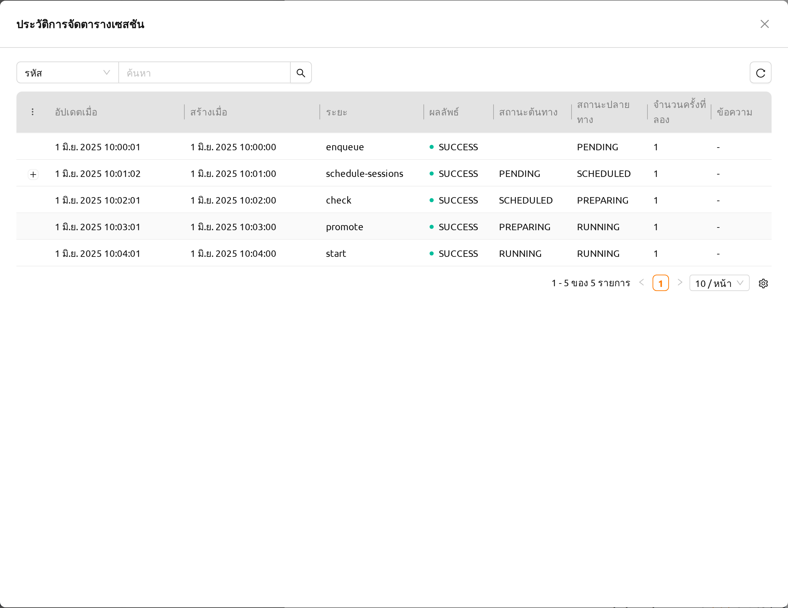
แถบตัวกรอง#
ที่ด้านบนของโมดัล แถบตัวกรองช่วยให้คุณจำกัดบันทึกประวัติการจัดตารางได้ คุณสามารถกรองตามคุณสมบัติต่อไปนี้:
- ID: กรองตาม ID ของบันทึกประวัติ (UUID, ตรงกันทั้งหมด)
- ขั้นตอน: กรองตามชื่อระยะการจัดตาราง
- ผลลัพธ์: กรองตามประเภทผลลัพธ์ (SUCCESS, FAILURE, STALE, NEED_RETRY, EXPIRED, GIVE_UP, SKIPPED)
- สถานะต้นทาง: กรองตามสถานะเซสชันก่อนขั้นตอนการจัดตาราง
- สถานะปลายทาง: กรองตามสถานะเซสชันหลังขั้นตอนการจัดตาราง
- รหัสข้อผิดพลาด: กรองตามรหัสข้อผิดพลาด
- ข้อความ: กรองตามเนื้อหาข้อความ
- สร้างเมื่อ: กรองตามเวลาที่สร้างบันทึก
- อัปเดตเมื่อ: กรองตามเวลาที่อัปเดตบันทึก
ปุ่มรีเฟรชอยู่ข้างแถบตัวกรองเพื่อโหลดข้อมูลประวัติการจัดตารางใหม่
ตารางประวัติ#
ตารางประวัติการจัดตารางแสดงบันทึกพร้อมคอลัมน์ต่อไปนี้:
- อัปเดตเมื่อ: เวลาที่บันทึกนี้ได้รับการอัปเดตล่าสุด
- สร้างเมื่อ: เวลาที่บันทึกนี้ถูกสร้างขึ้น
- ระยะ: ชื่อของระยะการจัดตาราง
- ผลลัพธ์: ผลลัพธ์ของขั้นตอนการจัดตารางนี้ แสดงเป็นป้ายที่มีรหัสสี
- สถานะต้นทาง: สถานะเซสชันก่อนขั้นตอนการจัดตารางนี้
- สถานะปลายทาง: สถานะเซสชันหลังขั้นตอนการจัดตารางนี้
- จำนวนครั้งที่ลอง: จำนวนครั้งที่ขั้นตอนการจัดตารางนี้ถูกลอง
- ข้อความ: ข้อความสรุปสำหรับขั้นตอนการจัดตารางนี้
คุณสามารถเรียงลำดับตารางตามคอลัมน์สร้างเมื่อหรืออัปเดตเมื่อเพื่อดูบันทึกในลำดับที่ต้องการ
การแบ่งหน้าตารางประวัติ#
ตารางประวัติการจัดตารางใช้การแบ่งหน้าแบบ offset โดยมีขนาดหน้าเริ่มต้น 10 รายการต่อหน้า การเปลี่ยนตัวกรองหรือลำดับการเรียงจะรีเซ็ตมุมมองกลับไปที่หน้า 1 โดยอัตโนมัติ
ขั้นตอนย่อยที่ขยายได้#
บันทึกประวัติบางรายการมีขั้นตอนย่อยอย่างละเอียด เมื่อมีขั้นตอนย่อย ลูกศรขยายจะปรากฏที่ด้านซ้ายของแถว คลิกเพื่อแสดงตารางซ้อนที่แสดงขั้นตอนย่อยแต่ละขั้นตอนของระยะการจัดตารางนั้น
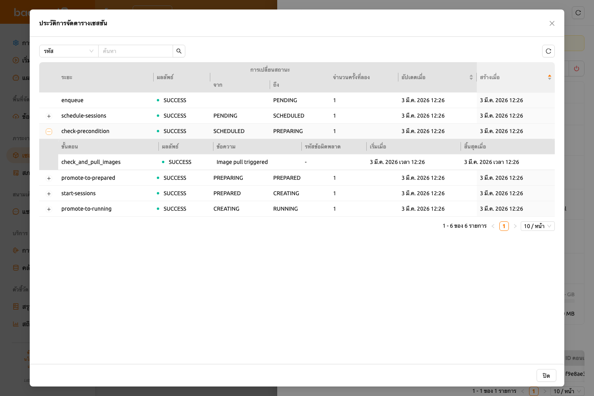
ตารางขั้นตอนย่อยประกอบด้วยคอลัมน์ต่อไปนี้:
- ขั้นตอน: ชื่อของขั้นตอนย่อย
- ผลลัพธ์: ผลลัพธ์ของขั้นตอนย่อย แสดงเป็นป้ายที่มีรหัสสี
- รหัสข้อผิดพลาด: รหัสข้อผิดพลาดเฉพาะหากขั้นตอนล้มเหลว
- ข้อความ: ข้อมูลรายละเอียดหรือคำอธิบายข้อผิดพลาด
- เริ่มเมื่อ: เวลาที่ขั้นตอนย่อยเริ่มต้น
- สิ้นสุดเมื่อ: เวลาที่ขั้นตอนย่อยเสร็จสิ้น
สีของป้ายผลลัพธ์#
แต่ละขั้นตอนการจัดตารางและขั้นตอนย่อยจะแสดงป้ายผลลัพธ์ที่มีรหัสสีระบุผลลัพธ์:
| ผลลัพธ์ | สี | ความหมาย |
|---|---|---|
| SUCCESS | เขียว | ขั้นตอนเสร็จสมบูรณ์สำเร็จ |
| FAILURE | แดง | ขั้นตอนล้มเหลว |
| STALE | เทา | บันทึกเก่าหรือไม่เป็นปัจจุบัน |
| NEED_RETRY | เหลือง | ขั้นตอนต้องลองใหม่ |
| EXPIRED | แดง | การลองจัดตารางหมดอายุ |
| GIVE_UP | แดง | ระบบยกเลิกการจัดตาราง |
| SKIPPED | เทา | ขั้นตอนถูกข้าม |
บันทึกการตรวจสอบเซสชัน#
แท็บ Audit Log จะปรากฏที่ด้านล่างของแผงรายละเอียดเซสชันควบคู่กับแท็บ Kernels แท็บนี้ให้บันทึกตามลำดับเวลาของทุกการกระทำที่ดำเนินการกับเซสชัน เช่น การเปลี่ยนแปลงสถานะ การแก้ไขทรัพยากร และการดำเนินการทางการดูแลระบบ พร้อมด้วยข้อมูลว่าใครเป็นผู้ดำเนินการและเมื่อใด
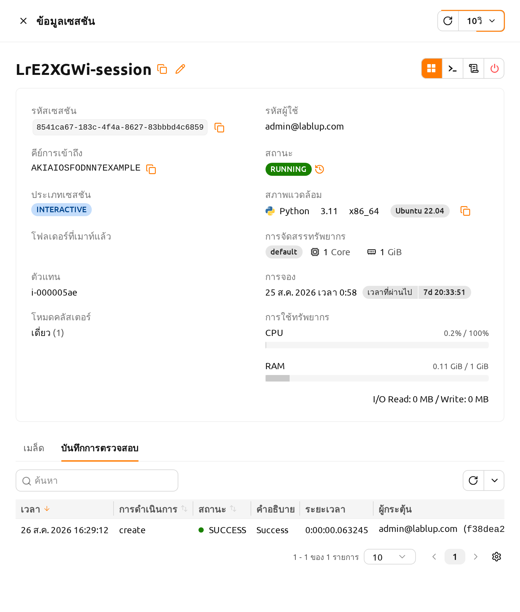
Audit Log ถูกควบคุมโดย backend และอาจมองเห็นได้เฉพาะ superadmin เท่านั้น ผู้ใช้ทั่วไปอาจเห็นผลลัพธ์ว่างเปล่าแม้ว่าแท็บจะสามารถเข้าถึงได้
คอลัมน์ Audit Log#
ตาราง Audit Log ประกอบด้วยคอลัมน์ต่อไปนี้:
- Triggered By: ที่อยู่อีเมลและ ID บัญชีของผู้ดำเนินการที่เริ่มต้นการกระทำ
- Operation: ประเภทของการกระทำที่ดำเนินการ (ตัวอย่างเช่น การสร้างเซสชัน การยุติ หรือการเปลี่ยนแปลงทรัพยากร)
- Status: ผลลัพธ์ของการกระทำ (
SUCCESS,ERROR,RUNNINGหรือUNKNOWN) - Time: เวลาที่เกิดการกระทำ
ตัวกรอง Audit Log#
ใช้แถบตัวกรองด้านบนตารางเพื่อจำกัดรายการบันทึก:
- Status: กรองตามผลลัพธ์ของการกระทำ (
SUCCESS,ERROR,RUNNING,UNKNOWN) - Operation: ค้นหาตามชื่อหรือคำสำคัญของการดำเนินการ
- Triggered By: ค้นหาตาม ID ของผู้ดำเนินการ
- Time: กรองด้วยตัวเลือกช่วงวันที่
ปุ่ม Refresh จะโหลดบันทึกใหม่ การค้นหา Audit Log จะถูกเลื่อนออกไปและส่งเฉพาะครั้งแรกที่คุณเปิดใช้งานแท็บ Audit Log
ใช้ Jupyter Notebook#
มาดูวิธีการใช้และจัดการเซสชันการคำนวณที่กำลังทำงานอยู่แล้วกัน คลิกไอคอนแรกที่มุมขวาบนของแผงรายละเอียดเซสชันเพื่อเปิดตัวเปิดแอป ซึ่งจะแสดง บริการแอปที่พร้อมใช้งานสำหรับเซสชันนั้น
มีตัวเลือกตรวจสอบสองตัวเลือกใต้ไอคอนแอป การเปิดแอปด้วยแต่ละรายการที่เลือกจะใช้คุณลักษณะต่อไปนี้ตามลำดับ:
- เปิดแอปให้กับสาธารณะ: เปิดแอปให้กับสาธารณะ โดยพื้นฐานแล้ว บริการเว็บเช่น Terminal และ Jupyter Notebook จะไม่สามารถเข้าถึงได้โดยผู้ใช้รายอื่น แม้ว่าผู้ใช้จะทราบ URL ของบริการก็ตาม เนื่องจากถือว่าไม่มีการตรวจสอบสิทธิ์ อย่างไรก็ตาม การตรวจสอบตัวเลือกนี้ทำให้ใครก็ตามที่ทราบ URL ของบริการ (และหมายเลขพอร์ต) สามารถเข้าถึงและใช้งานได้ แน่นอนว่าผู้ใช้ต้องมีเส้นทางเครือข่ายเพื่อเข้าถึงบริการนั้น
- ลองพอร์ตที่ต้องการ: หากไม่เลือกตัวเลือกนี้ หมายเลขพอร์ตสำหรับบริการเว็บจะถูกกำหนดแบบสุ่มจากกลุ่มพอร์ตที่เตรียมไว้ล่วงหน้าโดย Backend.AI หากคุณเลือกจุดนี้และป้อนหมายเลขพอร์ตเฉพาะ หมายเลขพอร์ตที่ป้อนจะถูกลองใช้ก่อน อย่างไรก็ตาม ไม่มีการรับประกันว่าพอร์ตที่ต้องการจะถูกกำหนดเสมอไป เนื่องจากพอร์ตอาจไม่มีอยู่ในกลุ่มพอร์ตเลยหรือบริการอื่นอาจใช้พอร์ตนั้นอยู่แล้ว ในกรณีนี้ หมายเลขพอร์ตจะถูกกำหนดแบบสุ่ม
ขึ้นอยู่กับการตั้งค่าของระบบ ตัวเลือกเหล่านี้อาจไม่แสดงออกมา
ให้คลิกที่ Jupyter Notebook

หน้าต่างป๊อปอัปจะแสดงว่า Jupyter Notebook กำลังทำงาน โน้ตบุ๊กนี้ถูกสร้างขึ้นภายในเซสชันการคำนวณที่กำลังทำงานอยู่ และสามารถใช้งานได้อย่างง่ายดาย ด้วยการคลิกปุ่มเพียงครั้งเดียว นอกจากนี้ ไม่จำเป็นต้องมีขั้นตอนการติดตั้งแพ็กเกจแยกต่างหาก เนื่องจากสภาพแวดล้อมภาษาและ ไลบรารีที่เซสชันการคำนวณจัดเตรียมไว้สามารถใช้งานได้เลย สำหรับคำแนะนำ โดยละเอียดเกี่ยวกับวิธีการใช้ Jupyter Notebook โปรดดูเอกสารอย่างเป็นทางการของ Jupyter Notebook
ไฟล์ id_container ในตัวสำรวจไฟล์ของโน้ตบุ๊กประกอบด้วยคีย์ส่วนตัว
SSH หากจำเป็น ผู้ใช้สามารถดาวน์โหลดและใช้งานเพื่อการเข้าถึง SSH / SFTP ไปยัง
คอนเทนเนอร์ได้
คลิกปุ่ม 'NEW' ที่มุมขวาบนและเลือก Notebook สำหรับ Backend.AI จากนั้นหน้าต่าง ipynb จะปรากฏขึ้นซึ่งผู้ใช้สามารถป้อนโค้ดของตนเองได้

ในหน้าต่างนี้ ผู้ใช้สามารถป้อนและดำเนินการโค้ดใด ๆ ที่ต้องการโดยใช้ สภาพแวดล้อมที่เซสชันจัดเตรียมไว้ โค้ดจะถูกดำเนินการบนหนึ่งใน โหนด Backend.AI ที่เซสชันการคำนวณถูกสร้างขึ้นจริง และไม่จำเป็นต้อง กำหนดค่าสภาพแวดล้อมแยกต่างหากบนเครื่องในพื้นที่

เมื่อปิดหน้าต่าง สามารถพบไฟล์ Untitled.ipynb ได้ในตัวสำรวจไฟล์ของโน้ตบุ๊ก
โปรดทราบว่าไฟล์ที่สร้างที่นี่จะถูกลบเมื่อเซสชันสิ้นสุดลง วิธีการรักษาไฟล์เหล่านั้นแม้
หลังจากเซสชันสิ้นสุดลงจะอธิบายไว้ในส่วนโฟลเดอร์ข้อมูลและการจัดเก็บ
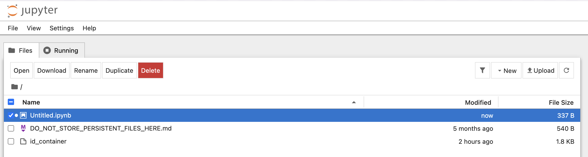
ใช้เทอร์มินัลเว็บ#
ส่วนนี้จะอธิบายวิธีการใช้งานเทอร์มินัลเว็บ คลิก
ไอคอนเทอร์มินัล (ปุ่มที่สอง) เพื่อใช้แอป ttyd ของคอนเทนเนอร์ เทอร์มินัลจะปรากฏในหน้าต่างใหม่
และผู้ใช้สามารถเรียกใช้คำสั่งเชลล์เพื่อเข้าถึงเซสชันการคำนวณได้ดังแสดงในรูปต่อไปนี้
หากคุ้นเคยกับคำสั่ง ผู้ใช้สามารถเรียกใช้คำสั่ง Linux ต่าง ๆ ได้อย่างง่ายดาย ไฟล์ Untitled.ipynb
สามารถพบได้ใน Jupyter Notebook ซึ่งแสดงด้วยคำสั่ง ls นี่แสดงให้เห็นว่าทั้งสองแอป
กำลังทำงานในสภาพแวดล้อมคอนเทนเนอร์เดียวกัน

ไฟล์ที่สร้างที่นี่ยังสามารถเห็นได้ทันทีใน Jupyter Notebook ด้วย ในทางกลับกัน การเปลี่ยนแปลงที่ทำกับไฟล์ใน Jupyter Notebook ก็สามารถตรวจสอบได้จากเทอร์มินัลทันที นี่เป็นเพราะทั้งสองแอปใช้ไฟล์เดียวกันในเซสชันการคำนวณเดียวกัน
นอกจากนี้ ผู้ใช้ยังสามารถใช้บริการที่ใช้เว็บ เช่น TensorBoard, Jupyter Lab เป็นต้น ขึ้นอยู่กับประเภทของสภาพแวดล้อมที่เซสชันการคำนวณจัดเตรียมไว้
ค้นหาบันทึกของเซสชันการคำนวณ#
ผู้ใช้สามารถดูบันทึกของเซสชันการคำนวณได้โดยคลิกไอคอน ดูบันทึกคอนเทนเนอร์
ในแผงรายละเอียดเซสชัน
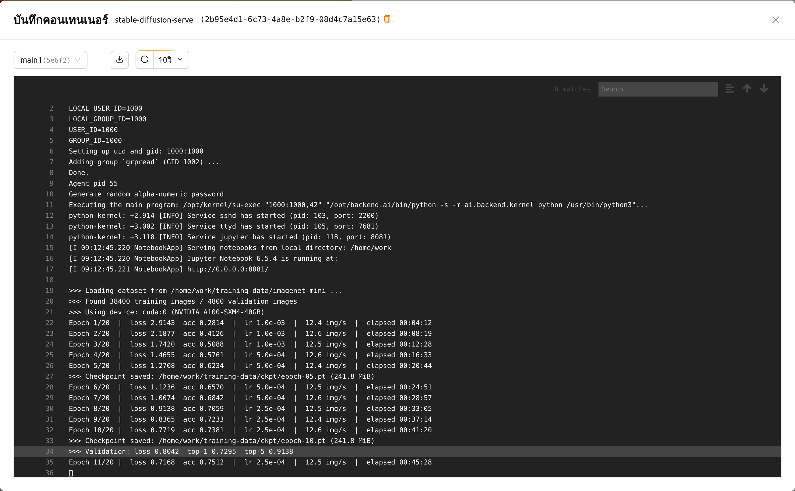
หน้าต่างบันทึกมีตัวควบคุมต่อไปนี้อยู่เหนือพื้นที่แสดงบันทึก:
- ตัวเลือกเคอร์เนล: เลือกเคอร์เนลของเซสชันที่ต้องการอ่านบันทึก สำหรับเซสชันคอนเทนเนอร์เดียว จะมีเพียงรายการเดียว ส่วนเซสชันแบบคลัสเตอร์จะแสดงแต่ละคอนเทนเนอร์ตามชื่อโฮสต์ พร้อมอักขระตัวแรก ๆ ของ ID
- ดาวน์โหลด: บันทึกล็อกที่แสดงอยู่ในขณะนั้นเป็นไฟล์ข้อความ
คุณยังสามารถค้นหาภายในบันทึกที่แสดงอยู่ได้โดยใช้ช่องค้นหาที่มีอยู่ในมุมมองบันทึก
เปลี่ยนชื่อเซสชันที่กำลังรัน#
สามารถเปลี่ยนชื่อของเซสชันที่กำลังทำงานอยู่ได้ คลิกปุ่ม 'Edit' ในแผงรายละเอียดเซสชัน เพื่อเปลี่ยนชื่อเซสชัน ชื่อเซสชันใหม่ควรเป็นไปตามกฎการตั้งชื่อ ด้วย
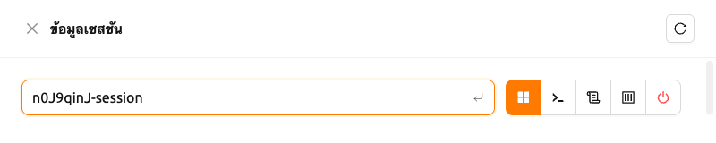
ลบเซสชันการคำนวณ#
หากต้องการยุติเซสชันที่ระบุ เพียงคลิกที่ปุ่มเปิดปิดสีแดงและคลิก ปุ่ม 'Terminate' ในกล่องโต้ตอบ เนื่องจากข้อมูลในโฟลเดอร์ภายในเซสชันการคำนวณ จะถูกลบทันทีที่เซสชันการคำนวณสิ้นสุดลง จึงแนะนำให้ ย้ายข้อมูลไปยังโฟลเดอร์ที่ถูกเมานต์หรืออัปโหลดไปยังโฟลเดอร์ที่ถูกเมานต์ตั้งแต่ เริ่มต้น
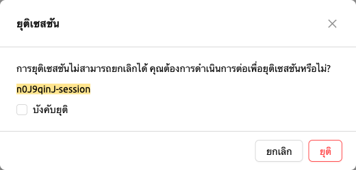
การตรวจสอบสถานะไม่ใช้งาน#
Backend.AI รองรับเกณฑ์การไร้กิจกรรม (ความเฉยเมย) สําหรับการเก็บขยะอัตโนมัติของเซสชันการคำนวณสามประเภท: อายุขัยสูงสุดของเซสชัน, เวลาเงียบสงบของเครือข่าย, และการตรวจสอบการใช้ทรัพยากร.
เกณฑ์ที่ใช้กับเซสชันที่กำลังทำงานจะแสดงอยู่ในแถว สถานะการเรียกคืน ของแผงรายละเอียดเซสชัน พร้อมกับเวลาที่เหลือก่อนที่แต่ละเกณฑ์จะยุติเซสชัน แถวนี้จะปรากฏขึ้นขณะที่เซสชันกำลังทำงาน และมีการตรวจสอบสถานะไม่ใช้งานอย่างน้อยหนึ่งรายการที่แสดงเวลาที่เหลือ ไม่ว่าจะเหลืออีกหลายวันหรือเพียงไม่กี่นาทีก็ตาม
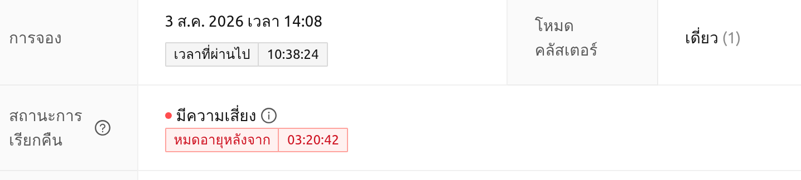
ความหมายของตัวตรวจสอบสถานะไม่ใช้งานมีดังต่อไปนี้ คลิกไอคอนเครื่องหมายคำถาม (?)
ถัดจากป้ายกำกับ สถานะการเรียกคืน เพื่อเปิดกล่องโต้ตอบที่มีคำอธิบายโดยละเอียดของแต่ละรายการ
อายุการใช้งานเซสชันสูงสุด: บังคับยุติเซสชันหลังจากเวลานี้นับตั้งแต่การสร้าง มาตรการนี้ป้องกันไม่ให้เซสชันทำงานต่อไปไม่มีที่สิ้นสุด
การหมดเวลาขณะว่างในการเชื่อมต่อเครือข่าย: บังคับยกเลิกเซสชันที่ไม่ได้แลกเปลี่ยนข้อมูลกับผู้ใช้ (เบราว์เซอร์หรือแอปเว็บ) หลังจากเวลานี้ การรับส่งข้อมูลระหว่างผู้ใช้และเซสชันการคำนวณจะเกิดขึ้นอย่างต่อเนื่องเมื่อผู้ใช้โต้ตอบกับแอป เช่น เทอร์มินัลหรือ Jupyter โดยการพิมพ์จากแป้นพิมพ์ การสร้างเซลล์ Jupyter ฯลฯ การสร้างเซลล์ Jupyter ฯลฯ หากไม่มีการโต้ตอบเป็นระยะเวลาหนึ่ง สภาวะการเก็บขยะจะถูกตอบสนอง แม้ว่าจะมีการประมวลผลที่กำลังดำเนินการงานในเซสชันการคำนวณ แต่ก็จะต้องถูกยกเลิกหากไม่มีการโต้ตอบจากผู้ใช้
Utilization Checker: ทรัพยากรที่ถูกจัดสรรให้กับเซสชันการคำนวณจะถูกเรียกคืนตามการใช้ทรัพยากรเหล่านั้น การตัดสินใจในการลบขึ้นอยู่กับสองปัจจัยดังต่อไปนี้:
- ระยะเวลาผ่อนผัน: ช่วงเวลาที่ตัวตรวจสอบการใช้งานที่ไม่ได้ใช้งานจะไม่ทำงาน แม้ว่าจะมีการใช้งานต่ำ เซสชันการคำนวณจะไม่ถูกยุติในระยะเวลานี้ อย่างไรก็ตาม เมื่อตัวระยะเวลาผ่อนผันสิ้นสุดลง หากการใช้งานเฉลี่ยยังคงต่ำกว่าค่ากำหนดในช่วงเวลารอที่ตั้งไว้ ระบบสามารถยุติเซสชันได้ตลอดเวลา ระยะเวลาผ่อนผันเป็นช่วงเวลาที่รับประกันเท่านั้นที่การยุติจะไม่เกิดขึ้น มาตรการนี้มีจุดประสงค์หลักเพื่อการจัดการทรัพยากร GPU ที่มีการใช้งานต่ำอย่างมีประสิทธิภาพ
- เกณฑ์การใช้งาน (Utilization Threshold): หากการใช้ทรัพยากรของเซสชันการคำนวณ ไม่เกินเกณฑ์ที่กำหนดในระยะเวลาที่กำหนด (idle timeout) เซสชันนั้น จะถูกยุติโดยอัตโนมัติ ตัวอย่างเช่น หากเกณฑ์การใช้งานตัวเร่งความเร็ว ถูกตั้งค่าเป็น 1% และเซสชันการคำนวณแสดง การใช้งานน้อยกว่า 1% ในช่วง idle timeout เซสชันนั้นจะกลายเป็นเป้าหมายสำหรับ การยุติ ทรัพยากรที่มีค่าว่างจะถูกยกเว้นจากเกณฑ์การเก็บขยะ
หลังจากช่วงเวลาให้อภัย เซสชันสามารถถูกยกเลิกได้ทุกเมื่อหากการใช้งานยังคงต่ำ การใช้ทรัพยากรอย่างสั้นๆ จะไม่ขยายช่วงเวลาให้อภัย จะพิจารณาเฉพาะการใช้งานเฉลี่ยในช่วงเวลาไม่ใช้งานล่าสุดเท่านั้น
ขึ้นอยู่กับการตั้งค่าของสภาพแวดล้อม ตัวตรวจสอบที่ไม่ทำงานและประเภทของทรัพยากรที่แสดงในตัวตรวจสอบการใช้งานอาจแตกต่างกันได้
สถานะการเรียกคืน#
รายการเซสชันมีคอลัมน์ สถานะการเรียกคืน ที่บอกให้คุณทราบได้ในทันทีว่าแต่ละเซสชัน ใกล้จะถูกเรียกคืนโดยตัวตรวจสอบการใช้งานมากเพียงใด ป้ายเดียวกันนี้ยังแทนที่ชื่อของรายการ ตัวตรวจสอบการใช้งานในแถว สถานะการเรียกคืน ของแผงรายละเอียดเซสชันด้วย
ป้ายมีสามระดับ ตามที่ระบุไว้ในคำอธิบายสัญลักษณ์ของป๊อปโอเวอร์:
- ปลอดภัย: การใช้งานเฉลี่ยในปัจจุบันสูงกว่าเกณฑ์อย่างเพียงพอ
- คำเตือน: การใช้งานเฉลี่ยในปัจจุบันสูงกว่าเกณฑ์ แต่ใกล้เคียงกับเกณฑ์
- มีความเสี่ยง: การใช้งานเฉลี่ยในปัจจุบันต่ำกว่าเกณฑ์
เนื่องจากป้ายจะเปลี่ยนระดับก่อนที่ค่าเฉลี่ยจะลดลงต่ำกว่าเกณฑ์จริง ๆ เซสชันจึงอาจแสดงเป็น มีความเสี่ยง ได้ทั้งที่ค่าเฉลี่ยปัจจุบันยังสูงกว่าเกณฑ์อยู่ ให้ถือว่าเป็นคำเตือนล่วงหน้า ที่เผื่อเวลาให้คุณรับมือ ไม่ใช่การแจ้งว่าค่าเฉลี่ยข้ามเกณฑ์ไปแล้ว
เซสชันที่ตัวตรวจสอบการใช้งานไม่มีผลบังคับใช้ และเซสชันที่ยังไม่มีค่าที่วัดได้ จะแสดง -
ในคอลัมน์นี้ ส่วนในแผงรายละเอียดเซสชัน รายการที่ยังไม่มีการตัดสินใจเรียกคืนครั้งแรกจะแสดงข้อความ
กำลังตรวจสอบการเรียกคืน แทนแท็กเวลาที่เหลือ
วางเมาส์เหนือไอคอนข้อมูล (i) ถัดจากป้ายเพื่อเปิดป๊อปโอเวอร์ที่แสดงรายละเอียดเบื้องหลังระดับนั้น:
- ประโยคเงื่อนไขที่ระบุว่าทรัพยากรจะถูกเรียกคืนเมื่อเงื่อนไข ใดเงื่อนไขหนึ่ง ที่แสดงไว้ คงอยู่ในระดับที่มีความเสี่ยง หรือเมื่อเงื่อนไข ทั้งหมด อยู่ในระดับนั้นเท่านั้น ประโยคที่ปรากฏขึ้นอยู่กับว่าผู้ดูแลระบบตั้งค่าตัวตรวจสอบไว้อย่างไร
- หนึ่งแถวต่อหนึ่งทรัพยากรที่วัดได้ แต่ละแถวมีป้ายระดับของตนเอง พร้อมค่าเฉลี่ยปัจจุบันเทียบกับ
เกณฑ์ที่กำหนดไว้ ในรูปแบบ
(ปัจจุบัน 12% | เกณฑ์ 5%) - คำอธิบายสัญลักษณ์ที่ระบุเกณฑ์ของแต่ละระดับทั้งสาม
ทรัพยากรที่ไม่มีค่าที่วัดได้จะแสดงด้วยเครื่องหมายขีดและไม่มีผลต่อการตัดสินระดับโดยรวม
เมื่อเวลาที่เหลือของรายการตัวตรวจสอบการใช้งานใกล้จะหมดลง แท็กเวลาที่เหลือถัดจากรายการนั้น จะใช้สีเดียวกับป้าย เซสชันที่การนับถอยหลังเปลี่ยนเป็นสีแดงจึงเป็นเซสชันที่ใกล้จะถูกเรียกคืน ในทางกลับกัน ขณะที่ยังเหลือเวลาอีกมาก แท็กจะไม่มีสีแม้ว่าป้ายจะแสดงระดับความเสี่ยงแล้วก็ตาม
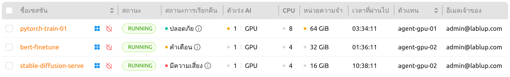
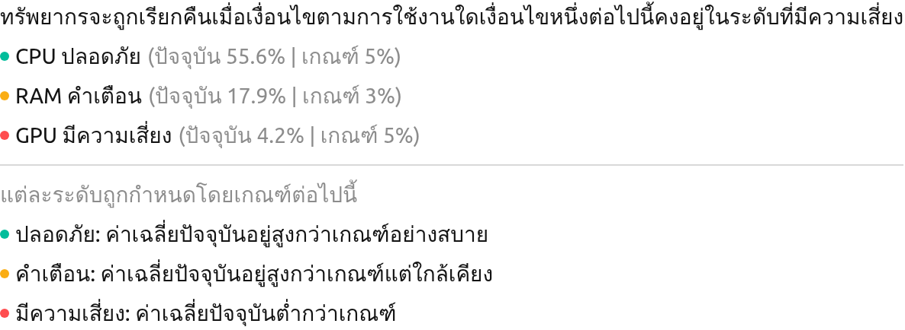
วิธีการเพิ่มตัวแปรสภาพแวดล้อมก่อนที่จะสร้างเซสชัน#
เพื่อให้พื้นที่ทำงานที่สะดวกยิ่งขึ้นสำหรับผู้ใช้ Backend.AI รองรับการตั้งค่าตัวแปรสภาพแวดล้อม
ในการเริ่มต้นเซสชัน ในฟีเจอร์นี้ ผู้ใช้สามารถเพิ่มตัวแปรสภาพแวดล้อมใด ๆ เช่น PATH ได้โดยการกรอก
ชื่อตัวแปรและค่าในกล่องโต้ตอบการกำหนดค่าสภาพแวดล้อม
หากต้องการเพิ่มตัวแปรสภาพแวดล้อม เพียงคลิกปุ่ม '+ Add environment variables' ของตัวแปร นอกจากนี้ คุณยังสามารถลบตัวแปรได้โดยการคลิกปุ่ม '-' ของแถวที่คุณต้องการลบออก
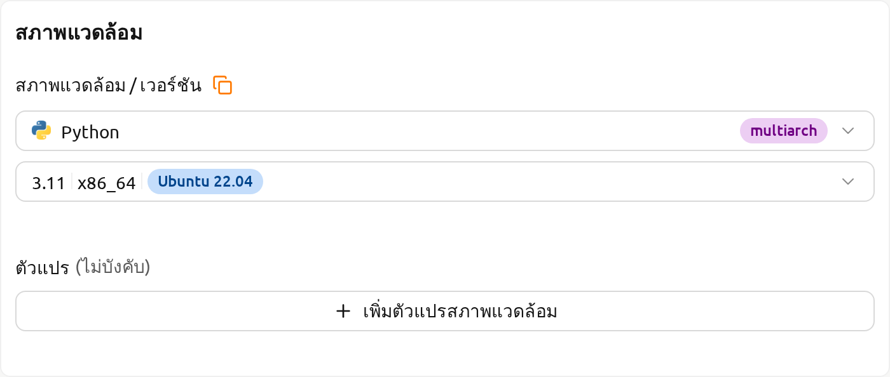
คุณสามารถเขียนชื่อตัวแปรและค่าในบรรทัดเดียวกันของช่องป้อนข้อมูลได้
วิธีการเพิ่มพอร์ตที่เปิดก่อนที่จะสร้างเซสชัน#
Backend.AI รองรับการตั้งค่าพอร์ตที่เปิดใช้งานล่วงหน้าเมื่อเริ่มต้นคอนเทนเนอร์ เมื่อใช้ฟีเจอร์นี้ จะไม่จำเป็นต้องสร้างอิมเมจแยกต่างหากเมื่อคุณต้องการเปิดเผยพอร์ตการบริการ
เพื่อเพิ่มพอร์ตที่เปิดล่วงหน้า เพียงป้อนค่าหลายค่าโดยแยกด้วยเครื่องหมายจุลภาค (,) หรือช่องว่าง

ในหน้าที่สี่ของหน้าการสร้างเซสชัน ผู้ใช้สามารถเพิ่ม อัปเดต และลบพอร์ตที่เปิดล่วงหน้าที่เขียนไว้ได้ หากต้องการดูข้อมูลโดยละเอียด เพิ่มเติม โปรดคลิกปุ่ม 'Help (?)'
ผู้ใช้สามารถใส่หมายเลขพอร์ตระหว่าง 1024 ~ 65535 ในช่องป้อนข้อมูล จากนั้นกด 'Enter' ผู้ใช้สามารถระบุพอร์ตได้หลายพอร์ตโดยคั่นด้วยเครื่องหมายจุลภาค (,) ผู้ใช้สามารถตรวจสอบพอร์ตที่เปิดล่วงหน้าที่กำหนดค่าไว้ได้ในตัวเปิดแอปเซสชัน
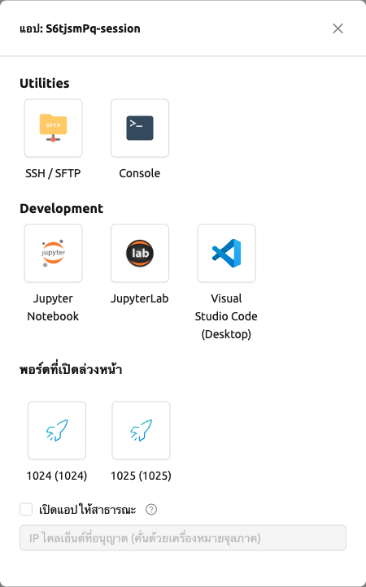
พอร์ตที่เปิดล่วงหน้าคือ พอร์ตภายในคอนเทนเนอร์ ดังนั้น ต่างจากแอปอื่น เมื่อผู้ใช้คลิกพอร์ตที่เปิดล่วงหน้าในตัวเปิดแอปเซสชัน จะมีหน้าว่างปรากฏขึ้น กรุณาผูกเซิร์ฟเวอร์กับพอร์ตที่เกี่ยวข้องก่อนใช้งาน
บันทึกการคอมมิตเซสชัน#
Backend.AI รองรับฟีเจอร์ "Convert Session to Image" การคอมมิตเซสชันที่อยู่ในสถานะ RUNNING จะบันทึก
สถานะปัจจุบันของเซสชันเป็นอิมเมจใหม่ คลิกปุ่ม 'Commit' (ไอคอนที่สี่) ในแผงรายละเอียดเซสชัน
เพื่อเปิดกล่องโต้ตอบที่แสดงข้อมูลเซสชัน หลังจากป้อนชื่อเซสชัน ผู้ใช้สามารถแปลงเซสชันเป็น
อิมเมจใหม่ได้ ชื่อเซสชันต้องมีความยาว 4 ถึง 32 ตัวอักษร และสามารถประกอบด้วยตัวอักษรและตัวเลข เครื่องหมายยัติภังค์ (-)
หรือเครื่องหมายขีดล่าง (_) เท่านั้น
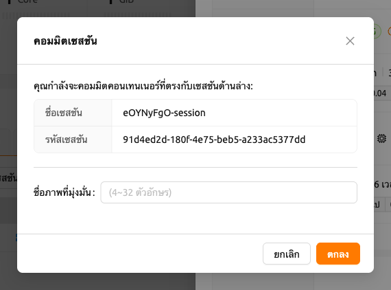
หลังจากกรอกชื่อเซสชันในช่องป้อนข้อมูลแล้ว ให้คลิกปุ่ม 'PUSH SESSION TO CUSTOMIZED IMAGE'
อิมเมจแบบกำหนดเองที่สร้างขึ้นด้วยวิธีนี้สามารถใช้ในการสร้างเซสชันในอนาคตได้ อย่างไรก็ตาม ไดเรกทอรี
ที่เมานต์ไปยังคอนเทนเนอร์สำหรับการคอมมิตอิมเมจจะถือเป็นทรัพยากรภายนอกและจะไม่รวมอยู่ใน
อิมเมจสุดท้าย โปรดจำไว้ว่า /home/work เป็นโฟลเดอร์เมานต์ (scratch directory) ดังนั้นจึงไม่รวมอยู่ด้วย
ปัจจุบัน Backend.AI รองรับ "Convert Session to Image" เฉพาะเมื่อเซสชันอยู่ในโหมด INTERACTIVE เท่านั้น
เพื่อป้องกันข้อผิดพลาดที่ไม่คาดคิด ผู้ใช้อาจไม่สามารถยุติเซสชันในระหว่างขั้นตอนการคอมมิตได้
หากต้องการหยุดขั้นตอนที่กำลังดำเนินการ ให้เลือกเซสชันและบังคับยุติ
จำนวนครั้งในการทำ "Convert Session to Image" อาจถูกจำกัดโดยนโยบายทรัพยากรของผู้ใช้ ในกรณีนี้ ให้ลบอิมเมจแบบกำหนดเองที่มีอยู่ และลองอีกครั้ง หากยังไม่สามารถแก้ไข ปัญหาได้ โปรดติดต่อผู้ดูแลระบบ
การใช้งานอิมเมจที่ถูกแปลงจากเซสชันที่กำลังดำเนินอยู่#
การแปลงเซสชันที่กำลังดำเนินอยู่ให้เป็นอิมเมจช่วยให้ผู้ใช้สามารถเลือกอิมเมจนี้ได้จากสภาพแวดล้อมในตัวเปิดเซสชัน
เมื่อสร้างเซสชันใหม่ อิมเมจนี้จะไม่ถูกเปิดเผยต่อผู้ใช้คนอื่น และมีประโยชน์สำหรับการใช้งานสถานะเซสชันปัจจุบัน
ต่อไปตามเดิม อิมเมจที่แปลงแล้วจะถูกติดแท็กด้วย Customized<session name>
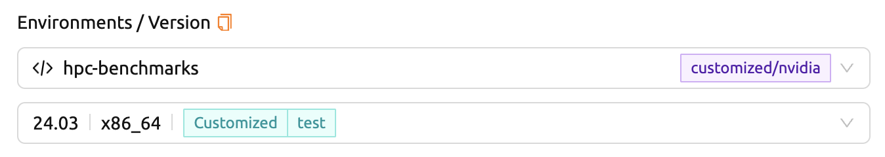
ในการป้อนชื่อสภาพแวดล้อมด้วยตนเองเพื่อสร้างเซสชันในอนาคต โปรดคลิกที่ไอคอนคัดลอก

การใช้งานเทอร์มินัลเว็บขั้นสูง#
เทอร์มินัลที่ใช้เว็บจะฝังยูทิลิตี้ที่เรียกว่า tmux ไว้ภายใน tmux เป็น terminal multiplexer ที่ รองรับการเปิดหน้าต่างเชลล์หลายหน้าต่างภายในเชลล์เดียว เพื่อให้ โปรแกรมหลายโปรแกรมสามารถทำงานในเบื้องหน้าพร้อมกันได้ หากผู้ใช้ต้องการใช้ประโยชน์ จากฟีเจอร์ tmux ที่ทรงพลังยิ่งขึ้น สามารถดูเอกสารอย่างเป็นทางการของ tmux และตัวอย่างการใช้งานอื่น ๆ บนอินเทอร์เน็ตได้
ที่นี่เรากำลังแนะนำฟีเจอร์ที่ง่ายแต่มีประโยชน์บางอย่าง
คัดลอกเนื้อหาของเทอร์มินัล#
tmux มีฟีเจอร์ที่มีประโยชน์จำนวนมาก แต่ค่อนข้างสับสนสำหรับ
ผู้ใช้ครั้งแรก โดยเฉพาะอย่างยิ่ง tmux มีบัฟเฟอร์คลิปบอร์ดของตัวเอง ดังนั้นเมื่อคัดลอก
เนื้อหาของเทอร์มินัล ผู้ใช้อาจประสบปัญหาที่สามารถวางได้เฉพาะภายใน tmux
เท่านั้นตามค่าเริ่มต้น ยิ่งไปกว่านั้น ยากที่จะเปิดเผยคลิปบอร์ดของระบบผู้ใช้
ให้กับ tmux ภายในเว็บเบราว์เซอร์ ดังนั้นเนื้อหาเทอร์มินัล
จึงไม่สามารถคัดลอกและวางไปยังโปรแกรมอื่นของคอมพิวเตอร์ผู้ใช้ได้ สิ่งที่เรียกว่า
Ctrl-C / Ctrl-V ไม่ทำงานกับ tmux
หากจำเป็นต้องคัดลอกและวางเนื้อหาเทอร์มินัลไปยังคลิปบอร์ดของระบบ
ผู้ใช้สามารถปิดการรองรับเมาส์ของ tmux ชั่วคราวได้ ก่อนอื่น ให้กดปุ่ม Ctrl-B
เพื่อเข้าสู่โหมดควบคุม tmux จากนั้นพิมพ์ :set -g mouse off แล้วกด Enter
(โปรดสังเกตว่าต้องพิมพ์เครื่องหมายทวิภาคแรกด้วย) ผู้ใช้สามารถตรวจสอบสิ่งที่กำลัง
พิมพ์ได้ในแถบสถานะที่ด้านล่างของหน้าจอ จากนั้นลากข้อความที่ต้องการ
จากเทอร์มินัลด้วยเมาส์และกด Ctrl-C หรือ Cmd-C (ใน Mac)
เพื่อคัดลอกไปยังคลิปบอร์ดของคอมพิวเตอร์ผู้ใช้
เมื่อปิดการรองรับเมาส์ จะไม่สามารถเลื่อนดูผ่านล้อเมาส์เพื่อดู
เนื้อหาของหน้าก่อนหน้าจากเทอร์มินัลได้ ในกรณีนี้ ผู้ใช้สามารถเปิด
การรองรับเมาส์ได้ กด Ctrl-B และในครั้งนี้ พิมพ์ :set -g mouse on ตอนนี้การเลื่อนผ่านล้อเมาส์พร้อมใช้งานเพื่อดูเนื้อหาของหน้าก่อนหน้า
หากคุณจำ :set -g mouse off หรือ :set -g mouse on หลังจาก Ctrl-B ได้
คุณจะสามารถใช้เทอร์มินัลเว็บได้อย่างสะดวกยิ่งขึ้น
Ctrl-B เป็นคีย์โหมดควบคุมเริ่มต้นของ tmux หากผู้ใช้ตั้งค่าคีย์ควบคุมอื่น
โดยการแก้ไข .tmux.conf ในไดเรกทอรีโฮมของผู้ใช้ ผู้ใช้ควรกด
ชุดคีย์ที่ตั้งไว้แทน Ctrl-B
ในสภาพแวดล้อม Windows ให้ดูที่ทางลัดต่อไปนี้
- คัดลอก: กด
Shiftค้างไว้ คลิกขวา แล้วลาก - วาง: กด
Ctrl-Shift-V
ตรวจสอบประวัติเทอร์มินัลโดยใช้แป้นพิมพ์#
ยังมีอีกวิธีหนึ่งในการคัดลอกเนื้อหาเทอร์มินัลและตรวจสอบเนื้อหา
ก่อนหน้าของเทอร์มินัลพร้อมกัน นั่นคือการตรวจสอบเนื้อหาก่อนหน้า
โดยใช้แป้นพิมพ์ คลิก Ctrl-B ก่อน แล้วจึงกดปุ่ม Page Up และ/หรือ Page Down หากต้องการออกจากโหมดค้นหา เพียงกดปุ่ม q
ด้วยวิธีนี้ ผู้ใช้สามารถตรวจสอบเนื้อหาประวัติเทอร์มินัลได้แม้
เมื่อปิดการรองรับเมาส์
สร้างเชลล์หลายตัว#
ข้อได้เปรียบหลักของ tmux คือการเปิดและใช้งานเชลล์หลายตัวในหน้าต่าง
เทอร์มินัลเดียว การกดปุ่ม Ctrl-B และ c จะแสดงสภาพแวดล้อมเชลล์ใหม่
หน้าต่างก่อนหน้าจะมองไม่เห็นในตอนนี้ แต่ยังไม่ถูกยุติ
กด Ctrl-B และ w รายการของเชลล์ที่เปิดอยู่บน tmux จะแสดงขึ้น
เชลล์ที่ขึ้นต้นด้วย 0: คือสภาพแวดล้อมเชลล์เริ่มต้น และเชลล์
ที่ขึ้นต้นด้วย 1: คือเชลล์ที่เพิ่งสร้างขึ้น ผู้ใช้สามารถเคลื่อนย้ายระหว่างเชลล์
โดยใช้ปุ่มขึ้น/ลง วางเคอร์เซอร์บนเชลล์ 0: และกดปุ่ม Enter
เพื่อเลือก
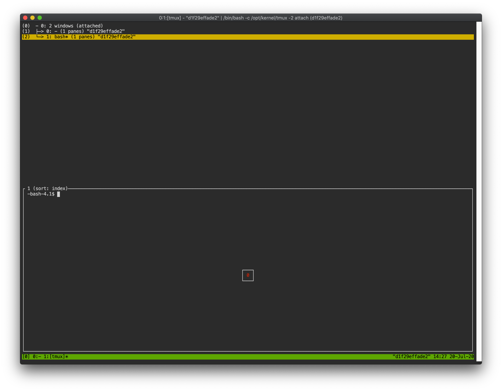
ด้วยวิธีนี้ ผู้ใช้สามารถใช้สภาพแวดล้อมเชลล์หลายตัวภายในเทอร์มินัลเว็บได้ หากต้องการออกหรือยุติ
เชลล์ปัจจุบัน เพียงป้อนคำสั่ง exit หรือกดปุ่ม Ctrl-B x จากนั้น
พิมพ์ y
โดยสรุป:
Ctrl-B c: สร้างเชลล์ tmux ใหม่Ctrl-B w: ค้นหาเชลล์ tmux ปัจจุบันและย้ายไปมาระหว่างเชลล์เหล่านั้นexitหรือCtrl-B x: ยุติเชลล์ปัจจุบัน
การรวมคำสั่งข้างต้นช่วยให้ผู้ใช้สามารถทำงานต่าง ๆ พร้อมกัน บนเชลล์หลายตัวได้